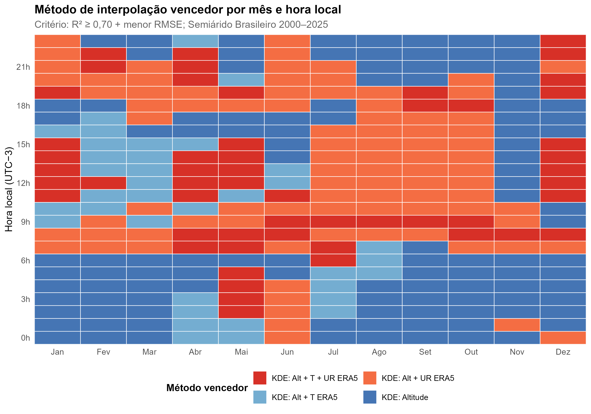
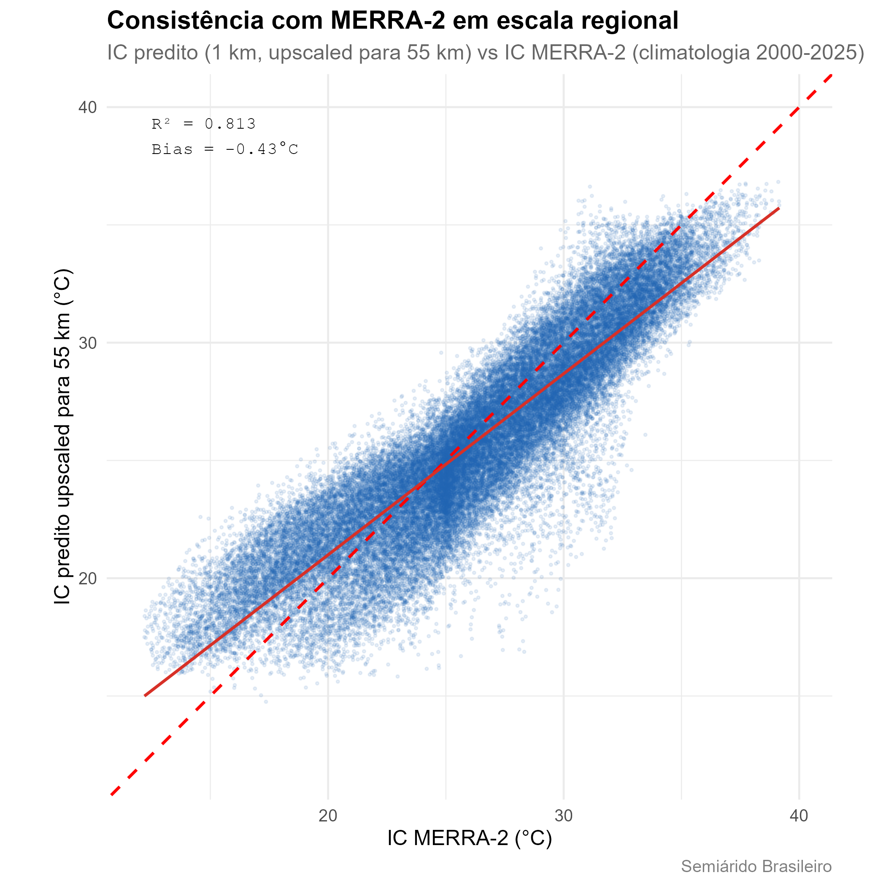

Este artigo documenta a metodologia de interpolação por trás da
climatologia do Índice de Calor distribuída pelo
heatindexbr (v0.2.0). O objetivo é dar aos usuários
informação suficiente para avaliar a adequação dos dados ao seu caso de
uso específico. O produto sinótico original de 2025 (v0.1.0) permanece
documentado no final deste artigo para referência.
Visão geral do pipeline

Três fontes de dados independentes (estações INMET, ERA5-Land e
covariáveis estáticas) são processadas em paralelo e convergem para a
etapa de validação LOOCV. A partir daí, o produto validado se bifurca em
duas verificações de consistência independentes antes de ser empacotado
em três produtos finais: o stack raster, a tabela municipal e o conjunto
de dados de exposição populacional, todos disponibilizados via Zenodo e
pelo pacote heatindexbr.
O Índice de Calor
O Índice de Calor (IC) é calculado usando a equação de regressão de Rothfusz (1990), que combina temperatura do ar (T, °C) e umidade relativa (UR, %) em um único índice de conforto térmico, baseando-se no trabalho fundamental de Steadman (1979) sobre a resposta fisiológica humana ao calor e à umidade. A velocidade do vento não é considerada, o que torna o índice viável para mapeamento em escala regional onde dados homogêneos de vento não estão disponíveis.
Dos horários sinóticos para uma climatologia completa
O produto principal do pacote não está mais limitado a quatro horários sinóticos. Agora ele fornece uma climatologia cobrindo todos os 12 meses e todas as 24 horas UTC, totalizando 288 combinações independentes de mês e hora, cada uma representando o IC médio de 2000-2025 para aquele momento específico do ciclo diário e anual. Essa é uma estimativa muito mais robusta das condições térmicas típicas do que qualquer ano isolado, e permite que os usuários examinem o ciclo diurno e sazonal completo em vez de quatro instantâneos fixos.
Cada uma das 288 combinações foi modelada e validada de forma independente. Não há um único “melhor método” para todo o conjunto de dados, pois o processo físico que determina o Índice de Calor muda ao longo do dia, como detalhado a seguir.
Dados de entrada
Estações meteorológicas: estações automáticas do INMET, período climatológico 2000-2025. A rede de validação usou 119 estações após aplicar critérios de completude de dados.
Covariáveis usadas nos melhores modelos:
| Covariável | Fonte | Resolução |
|---|---|---|
| Altitude | SRTM | ~90 m |
| Temperatura do ar (T) | Campo de covariável derivado do INMET | por estação |
| Umidade relativa (UR) | Campo de covariável derivado do INMET | por estação |
| ERA5-Land T2m | Exportação climatológica via Google Earth Engine | ~9 km |
Comparação de métodos e o método vencedor por combinação
Cada uma das 288 combinações de mês e hora foi modelada usando krigagem com deriva externa (KDE), testando combinações de altitude, temperatura, umidade relativa e covariáveis ERA5-Land. O Random Forest foi testado e descartado para a climatologia completa pelo mesmo motivo da análise original de 2025: a validação cruzada espacial por blocos revelou vazamento espacial (delta R² = 0,082 entre o LOOCV padrão e a CV por blocos), o que significa que o modelo estava parcialmente memorizando a vizinhança das estações em vez de aprender uma estrutura espacial genuína.
O método vencedor para cada combinação foi selecionado usando dois critérios aplicados em sequência: R² maior ou igual a 0,70, depois menor RMSE entre os métodos que atingem esse limiar. Quatro variantes de KDE competem entre as 288 combinações:
- KDE: Altitude: altitude isolada como deriva externa.
- KDE: Alt + UR ERA5: altitude mais umidade relativa e ERA5-Land T2m.
- KDE: Alt + T ERA5: altitude mais temperatura do ar e ERA5-Land T2m.
- KDE: Alt + T + UR ERA5: o conjunto completo de covariáveis.
O heatmap abaixo mostra qual método vence para cada uma das 288 combinações, organizado por mês (colunas) e hora local (linhas, UTC-3).

Um padrão físico claro emerge. À noite (00h às 06h hora local), KDE: Altitude isoladamente vence em quase todo o domínio: a forçante atmosférica sinótica é fraca durante a noite, e o relevo local se torna o controle dominante sobre a temperatura. Durante o dia (09h às 18h hora local), métodos que incorporam ERA5-Land T2m dominam: a forçante atmosférica regional, capturada pelo produto de reanálise, se torna o controle mais forte da variação espacial de temperatura do que o relevo isolado. Essa transição é mais acentuada por volta do nascer e do pôr do sol, onde a mistura de métodos se torna mais heterogênea entre os meses.
Resultados de validação
Resumo do LOOCV nas 288 combinações:
| Estatística | Valor |
|---|---|
| R² médio | 0,778 |
| RMSE médio | 1,12°C |
| Erro absoluto médio | aproximadamente 0,85°C |
| Bias | próximo de zero em todos os horários |
| Combinações abaixo de R² = 0,70 | 58 de 288 |
As 58 combinações abaixo do limiar de R² = 0,70 estão concentradas
entre março e junho, próximo de 06h a 09h UTC. Esse período corresponde
à transição entre a estação chuvosa e a seca no Semiárido, quando as
condições atmosféricas são mais variáveis e mais difíceis de interpolar
com as covariáveis disponíveis. Para essas combinações, o método de
menor RMSE foi usado mesmo sem atingir o limiar de R², e cada uma é
sinalizada internamente com atende_R2 = FALSE. O pacote
heatindexbr avisa automaticamente o usuário quando uma
combinação de mês e hora solicitada cai nessa faixa.
Verificação de consistência independente: reanálise MERRA-2
Para avaliar se a climatologia é fisicamente plausível além da rede de estações INMET usada para construí-la, os valores preditos de Índice de Calor foram upscaled de 1 km para aproximadamente 55 km e comparados com o produto de reanálise MERRA-2 da NASA, que é totalmente independente do modelo de interpolação e dos dados de estação.

A comparação mostra R² = 0,813 e Bias = -0,43°C. Como ambos os produtos são modelos, e não verdade de campo direta, RMSE e MAE não são reportados aqui; métricas que assumem que um dos lados é o valor “verdadeiro” não fazem sentido entre duas climatologias modeladas de forma independente. A forte concordância na resolução upscaled reforça a plausibilidade física da interpolação subjacente de 1 km, independentemente de qualquer rede de estações específica.
Especificações técnicas do raster
| Propriedade | Valor |
|---|---|
| Arquivo | IC_288h_stack.tif |
| Bandas | 288 (12 meses × 24 horas UTC, ordem mês-externo hora-interno) |
| CRS | EPSG:5880 (SIRGAS 2000 / Brazil Polyconic) |
| Resolução | ~1 km |
| Extensão | Semiárido Brasileiro (CONDEL/SUDENE 176/2024) |
| Cobertura temporal | climatologia 2000-2025 |
| DOI Zenodo | 10.5281/zenodo.21049066 |
As horas são armazenadas em UTC. O pacote heatindexbr
converte para hora local (UTC-3) automaticamente:
hora_local = (hora_utc - 3) %% 24.
Exposição populacional
A tabela municipal inclui dados de população dos Censos IBGE de 2000, 2010 e 2022, unidos por nome de município normalizado e estado. Totais de população do Semiárido Brasileiro:
| Ano do censo | População |
|---|---|
| 2000 | 27.719.145 |
| 2010 | 29.975.455 |
| 2022 | 31.035.363 |
Usando os pesos populacionais de 2022, o IC médio no Semiárido é de
25,9°C, com o percentil 90 em 31,6°C e o percentil 95 em 32,4°C. O
pacote aplica uma convenção de ano-censo ao unir população a um
determinado período: pop_2000 para análises antes de 2010,
pop_2010 para 2010-2021, e pop_2022 para 2022
em diante.
Apêndice: o produto sinótico de 2025 (v0.1.0)
O produto original do pacote, ainda disponível via
product = "synoptic_2025", fornece o IC médio anual para o
único ano de 2025 em quatro horários sinóticos (00h, 09h, 15h, 21h hora
local). Usou um conjunto de covariáveis mais simples, selecionado por
horário: NDVI para horários noturnos, capturando processos locais de
superfície na Caatinga, e ERA5-Land T2m para o horário das 15h,
capturando a forçante sinótica diurna. A validação contra 59 a 73
estações INMET (dependendo do horário) resultou em R² = 0,884 e RMSE =
1,04°C às 15h, o melhor horário desse conjunto de dados.
Esse produto continua útil para análises especificamente sobre o ano de 2025, mas a climatologia descrita acima é recomendada para qualquer aplicação preocupada com condições térmicas típicas ou de longo prazo.
Referências
ROTHFUSZ, L. P. The heat index equation (or, more than you ever wanted to know about heat index). NWS Technical Attachment SR 90-23. National Weather Service, Fort Worth, TX, 1990.
STEADMAN, R. G. The assessment of sultriness. Part I: a temperature-humidity index based on human physiology and clothing science. Journal of Applied Meteorology, v. 18, n. 7, p. 861-873, 1979.
BRASIL. Resolução CONDEL/SUDENE n. 176, de 26 de março de 2024. Aprova a delimitação do Semiárido Brasileiro. Superintendência do Desenvolvimento do Nordeste, Recife, 2024. Disponível em: https://www.gov.br/sudene/pt-br/assuntos/superintendencia/semiarido.